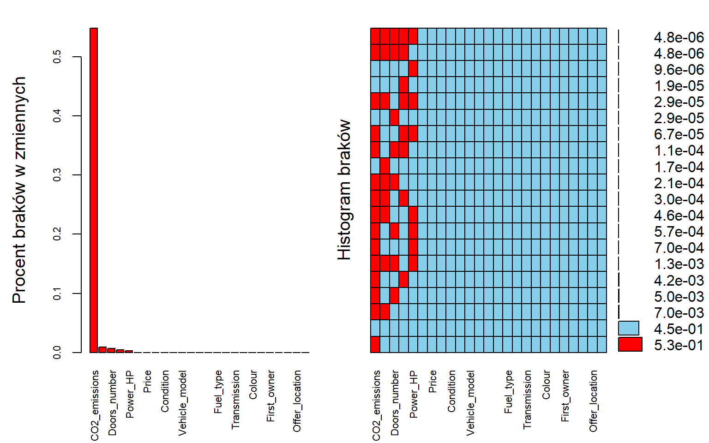
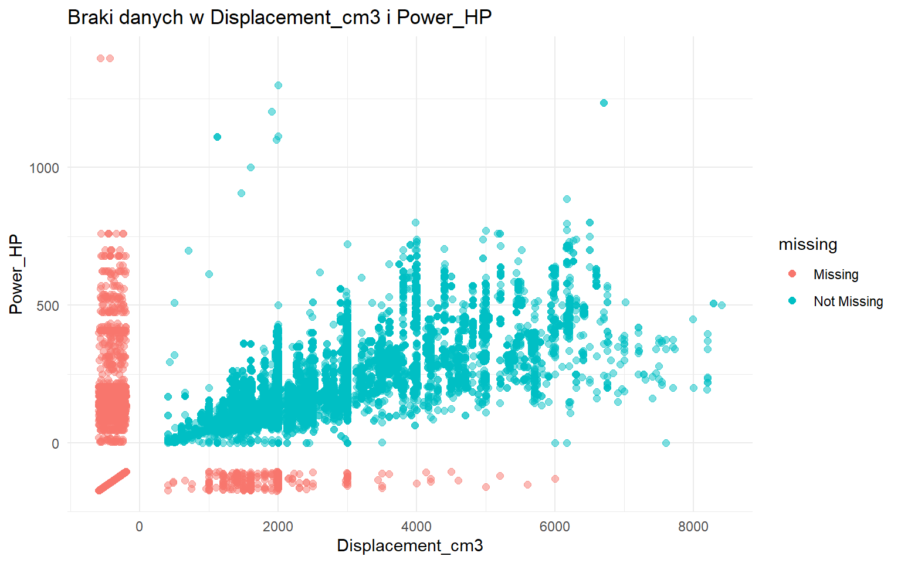
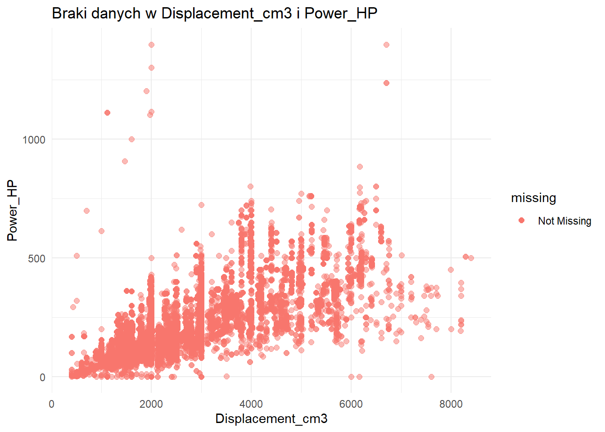
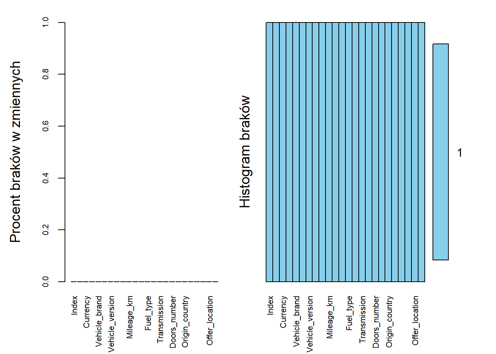

2 2. Porządkowanie danych
W tym rozdziale opisano proces porządkowania danych, w tym obsługę braków danych, transformacje zmiennych oraz usuwanie obserwacji odstających. Podjęte zdiałania mają na celu przygotowanie danych do dalszej analizy opisowej i testowania statystycznego.
2.1 2.1. Braki danych
Pierszym krokiem będzie identyfikacja zmiennych, które zawierają braki. Za pomocą funkcji aggr z pakietu VIM utworzono wykres pokazujący braki danych w poszczególnych zmiennych.

Wykres pokazuje bardzo duże braki w zmiennej CO2_emissions, która nie jest parametrem kluczowym dla naszych analiz, dlatego zostanie usunięta z dalszej analizy. Pozostałe zmienne z brakami danych będą poddane dalszej analizie w celu określenia, czy braki są losowe, czy systematyczne.
Następnie, za pomocą funkcji geom_miss_point z pakietu naniar, wizualizujemy braki danych w dwóch kluczowych zmiennych: Displacement_cm3 i Power_HP. Pozwoli to ocenić, czy braki w tych zmiennych są powiązane ze sobą lub z innymi cechami danych.

Na podstawie wykresu możemy zauważyć występowanie liniowej zależności między zmiennymi Displacement_cm3 i Power_HP, dlatego braki w danych zostały uzupełnione za pomocą metody mice. Po wykonanej implementacji danych sprawdzamy za pomocą takiego samego wykresu, czy wszystkie braki dla wymienionych zmiennych zostały wyeliminowane.

Dla pozostałych zmiennych, wktórych występowały braki danych również zastosowano metodę mice, zmienna Mileage została wyestymowana za pomocą zależności od zmiennych: Production_yea oraz Power_HP, natomiast zmienna Doors_number na podstawie zmiennej Type.
Na koniec sprawdzono czy wszystkie braki danych zostały usunięte.

2.2 2.2. Walidacja danych
W celu eliminacji obserwacji odstających, które mogą zniekształcić wyniki analizy, przeprowadzono walidację danych dla kluczowych zmiennych. Poniżej przedstawiono przyjęte kryteria walidacji:
Price - powinna być większa od 0.
Mileage_km - musi być liczbą nieujemną i mniejsze od 999999 km.
Production_year - musi być liczbą całkowitą mieszczącą się w rozsądnym zakresie od 1886 do 2025r.
Power_HP - musi być liczbą większą niż 1.
Displacement_cm3 - musi być liczbą większą niż 1.
Doors_number - musi być liczbą całkowitą z przedziału 1-6.
Poniższa tabela przedstawia liczebności obserwacji spełniających oraz niespełnijących powyższe kryteria:
| Reguła | Łącznie | Spełnione | Niespełnione |
|---|---|---|---|
| V1 | 208304 | 208304 | 0 |
| V2 | 208304 | 208304 | 0 |
| V3 | 208304 | 208304 | 0 |
| V4 | 208304 | 208260 | 44 |
| V5 | 208304 | 208251 | 53 |
| V6 | 208304 | 208304 | 0 |
| V7 | 208304 | 208291 | 13 |
Zmienne niespełniające kryteria walidacji zostały oznaczone jako braki danych (NA). Natępnie przeprowadzono kolejną walidację dla nowych braków zmiennych analogicznie jak w kroku 2.1.
Po walidacji sprawdzono czy wszystkie braki danych zostały usunięte.
Finalna procentowa zawartość danych bez braków: 100 %
Ostatecznie mamy dane, które spełniają kryteria walidacji i nie zawierają braków danych. Możemy przejść do dalszej analizy danych. Dla uzyskanych danych wybieramy marki Mercedes i BMW do dalszej analizy.